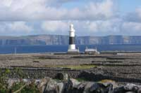
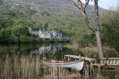
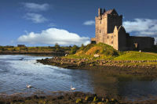

Galway Surrounds
Sightseeing tours can be booked with Ellen's B&B at a discount.
Galway sightseeing
Galway is a perfect base to explore the wide range of attractions dotted outside of the city. Within a short distance by bus or car you can visit any of the places listed below. So make sure you see at least a few of these places on your next visit.

The Aran Islands are located about 48km (30 miles) from the mouth of Galway Bay. Inishmore (or Inis Mór) is the largest of the three islands which measures just 14km (9 miles) in length and 4.8km (3 miles) at its widest point. The islands are famous for their prehistoric and Christian monuments including the spectacular Dún Aengus fort that is one of best examples of this type of fort in all of Europe.

The Cliffs of Moher are one of Ireland's most visited tourist attractions. Situated in North-West Clare between the villages of Liscannor and Doolin, the Cliffs of Moher are one of Ireland's most spectacular natural wonders. Over 700 feet tall at their highest point, the shale and sandstone cliffs drop almost vertically to the Atlantic ocean far below. From the top there are views, to the Aran Islands and Galway Bay.

The Burren, in County Clare is a barren place, famous for its unique rock formations and exceptional diversity of flora and fauna. There are also large number of historic sites contained within The Burren, making it a popular visitor attraction for the region. Many visitors also come for the walking, sea-angling, photography and caving that make this corner of Ireland such an attraction.

The distinct region of Connemara is located in the north west corner of County Galway. Connemara's breathtaking landscape is a mixture of unspoilt rivers, lakes, woodlands, rich meadowlands, rugged hills, dramatic mountains and stunning coastline of sandy beaches and crystal blue waters. Connemara is a Gaeltacht (Irish-speaking) area, rich in Irish culture, heritage and traditions. The main town in the Connemara region is Clifden. It has lots of quirky shops, restaurants and traditional Irish pubs to explore.

Kylemore Abbey A trip to the West of Ireland is not complete without experiencing the beauty and tranquility of Kylemore Abbey and Gardens. It has an abundance of nature trails, woodland and a beautiful walled garden that will bring you back to the Victorian era. Facilities include a visitor centre, an exhibition housed in the main reception rooms of the house and a video which takes the visitor through the history of the house and its occupants.

Dunguaire Castle is a magnificent 16th century castle overlooking the village of Kinvara and Galway Bay. From Apr - Sep the castle comes alive with medieval banquets & performances. Part of the lore is that the Lord of the castle was very generous and he continued this generosity into the afterlife. Today, if a person stands at the front gate and asks a question, they will have an answer to their question by the end of the day.


 Tel:+353(0)87 980 8504 12 St Bridgets Terrace, Galway.
Copyright © 2017 Karen Feeley. All rights reserved
Tel:+353(0)87 980 8504 12 St Bridgets Terrace, Galway.
Copyright © 2017 Karen Feeley. All rights reserved